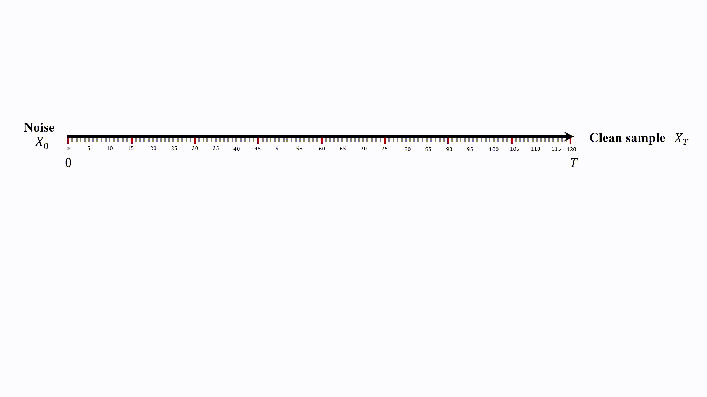
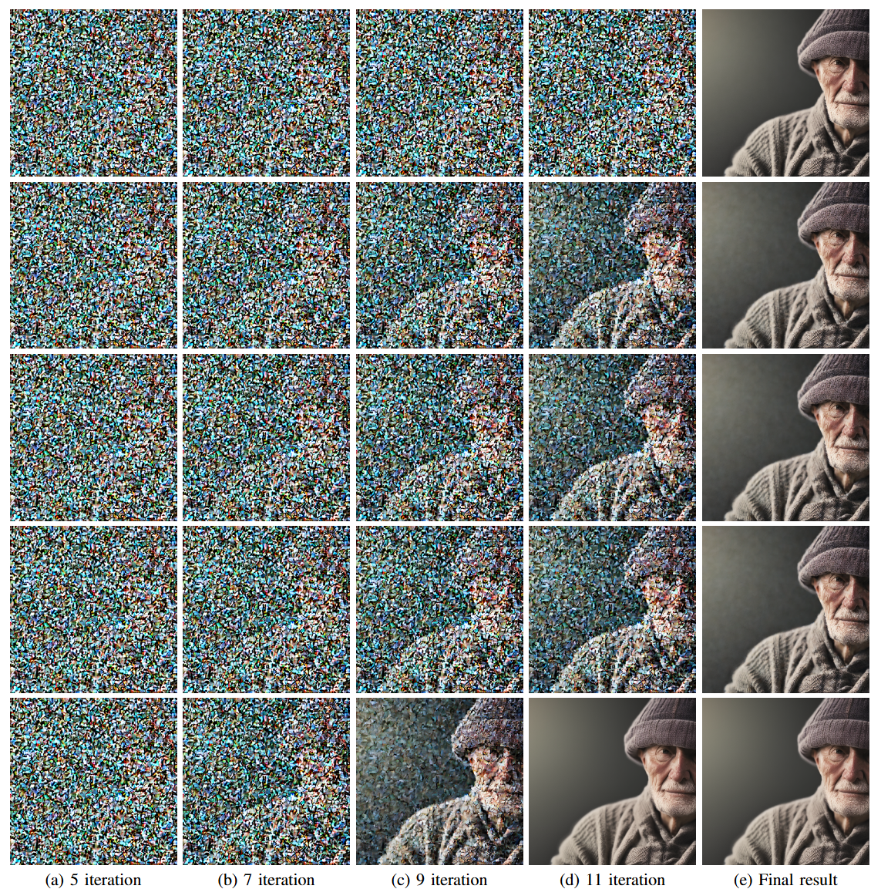
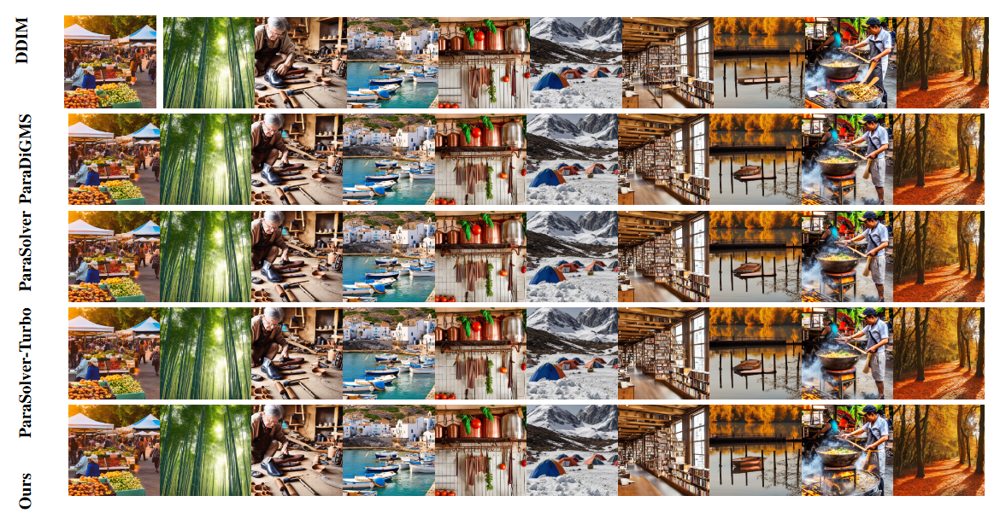

Back to the Drawing Board:
A Critical Evaluation of Few-Step Solvers for Production Diffusion Models
Abstract
While recent works have indicated that training-free few-step sampling solvers can achieve nearly quality-lossless acceleration for diffusion and flow-matching models, their real impact on production diffusion generation is not fully understood. In this work, we develop a comprehensive systematization for training-free few-step sampling on diffusion models by enumerating the quality metrics that the literature and industry actually use to judge sampling acceleration. We present a critical analysis under practical production environments, characterizing the realistic quality dimensions a service cares about—human-preference alignment, aesthetic quality, dense instruction following, and in-image long-text rendering—which the standard FID/CLIP protocol overlooks. Our findings are rather surprising: contrary to the established belief that few-step solvers are virtually quality-lossless, we show that they remain near-lossless only on simple distribution-alignment metrics yet degrade substantially under the metrics a production service actually cares about, and thus deliver no effective few-step acceleration. We go even further and propose ParaLin++, a novel state-of-the-art parallel sampling method built on our conference ParaLin, and show via an extensive set of experiments across Stable Diffusion-v2, LSUN Church, FLUX.1-dev, and Ming-Flash-Omni 2.0 that it preserves the full-step Euler quality profile at 3.6×–5.2× (up to 71.4× at 1000 steps), 1.68× on FLUX and 1.21× on Ming.
Acceleration Showcase (Up to 71.4× Speedup)
ParaLin++ achieves massive speedup without quality loss.
Our method (top) vs. Baseline (bottom).

The Metric Gap
The decisive axis of a training-free accelerator is the metric that certifies it “quality-lossless”, not the speed lever it uses. The academic literature stops at distributional and text-alignment proxies, while production services are judged on a much deeper quality profile:
📚 What academia reports
- FID / sFID / IS — distribution-to-distribution alignment only
- CLIP score / CLIP-FID — coarse prompt–image embedding similarity
Outdated for production: blind to sample-level semantics, dense instructions, aesthetics, and in-image text.
🏭 What production requires
- GenEval — object composition & counting fidelity
- DPG-Bench — dense, multi-clause prompt following
- LongTextBench — long, legible in-image text
- Human-preference & aesthetic alignment
FID-Lossless ≠ Production-Ready
On FLUX.1-dev, 16-step UniPC / DPMSolver++ stay within 0.03 FID of the 30-step Euler reference, yet collapse on the industrial profile. ParaLin++ keeps all 30 discrete steps, parallelizes the solver iterations, and preserves the Euler-level quality while being faster:
| Method | Regime | Steps | FID ↓ | GenEval ↑ | DPG-Bench ↑ | LongTextBench ↑ | Speedup ↑ |
|---|---|---|---|---|---|---|---|
| Euler (reference) | Sequential | 30 | 59.96 | 0.66 | 83.97 | 0.27 | 1.00× |
| UniPC | Few-step | 16 | 59.99 | 0.52 (−21%) | 77.46 (−6.5) | 0.09 (−67%) | 1.81× |
| DPMSolver++ | Few-step | 16 | 59.97 | 0.50 (−24%) | 75.75 (−8.2) | 0.08 (−70%) | 1.85× |
| ParaLin++ (ours) | Step-parity parallel | 30 | 59.94 | 0.64 | 84.24 | 0.26 | 1.68× |
Table: industrial-benchmark audit on FLUX.1-dev. The same pattern holds across guidance strengths (CFG 0–14) and on Ming-Flash-Omni 2.0, where ParaLin++ keeps the Euler-level profile (GenEval 0.87 vs. 0.88; DPG-Bench 86.99 vs. 86.86; LongTextBench 0.95 vs. 0.95) at 1.21×.
See the Difference
Rows: production benchmarks (GenEval / DPG-Bench / LongTextBench).
Columns: 30-step Euler, 16-step UniPC, 16-step DPMSolver++, 30-step ParaLin++.

FLUX.1-dev: few-step results keep plausible low-level appearance but break semantics — the pizza gains hole artifacts, the F1 car and boat deform, and the autumn-poster text vanishes; ParaLin++ stays aligned with the Euler reference.

Ming-Flash-Omni 2.0: few-step solvers recolor the elephant/banana scene, wash out the desk scene, and corrupt the warehouse warning labels; ParaLin++ again matches the reference.
The Problem with Few-Step Solvers
Step-shortening solvers (DDIM, DPMSolver++, UniPC) buy fewer discrete steps by altering the prompt-conditioned trajectory — and the altered trajectory is exactly what breaks dense-prompt and text fidelity; FID merely fails to reflect this break because it overlooks sample-level semantics. Parallel sampling instead keeps all N discrete steps and removes only the solver's temporal dependency. We call this the step-parity route, and ParaLin++ is its strongest realization.
Our Solution: ParaLin++
ParaLin++ reinterprets sequential sampling as a mixed system of linear and nonlinear equations and solves it in parallel. Building on our conference ParaLin, it combines four components:
Adaptive Nonlinearization (ϱ-nonlinear system)
Only the first ϱ blocks stay nonlinear; the rest become linear with reused clean-sample predictions, drastically cutting NFE.
Successive Over-Relaxation
Provably stable for 0 < ω < 2/(1+L), accelerating contraction of both nonlinear and linear blocks.
Sliding Window
Bounds the working set for long trajectories such as 1000-step DDPM.
Adaptive Stopping
A relative historical-error test with an exponential moving average terminates iterations precisely.
Theory: an accumulated error bound relative to the exact sequential trajectory, and convergence of the iteration to the ϱ-nonlinear surrogate system within K ≤ N iterations.
How It Works: The Partially Linear Pipeline
Instead of treating all steps as computationally expensive nonlinear operations, our method linearizes most of the sampling process. As shown in the pipeline below, only a small number of steps (the "Nonlinear Region" ϱ) require full model evaluations. The remaining steps ("Linear Region") are solved with a highly efficient linear solver, dramatically reducing NFE and unleashing parallel efficiency.

Preserving Quality: Intermediate Step Comparison
Our method converges to a high-fidelity image in significantly fewer iterations, demonstrating efficiency without sacrificing quality.

Comparison 1: Expediting DDIM (50 steps).
The rows, from top to bottom, represent DDIM, ParaDiGMS, ParaSolver, ParaLin, and ParaLin++ (the last two shown under their former ParaSolver-Turbo-series names).

Comparison 2: Visual comparison of samplers (50-step DDIM baseline)
Quantitative Results
ParaLin++ sets a new state of the art in accelerating diffusion sampling. On Stable Diffusion-v2 (classifier guidance w = 7.5) and LSUN Church (5000 samples), it consistently achieves the lowest wall-clock time and iteration counts, with negligible change in FID or CLIP scores, even on a single GPU.
Stable Diffusion-v2
| Steps | Method | Iters ↓ | NFE ↓ | CLIP ↑ | FID ↓ | Time (s) ↓ | Speedup ↑ |
|---|---|---|---|---|---|---|---|
| 1000 | DDPM | 1000 | 1000 | 25.6 | 55.9 | 128.0 | 1.0× |
| DDPM + ParaDiGMS | 65 | 2024 | 25.6 | 55.6 | 32.8 | 3.9× | |
| DDPM + ParaSolver | 32 | 1065 | 25.6 | 55.3 | 15.9 | 8.1× | |
| DDPM + ParaLin | 32 | 195 | 25.6 | 55.7 | 3.2 | 40.0× | |
| DDPM + ParaLin++ | 29 | 162 | 25.6 | 55.3 | 2.0 | 64.1× | |
| 50 | DDIM | 50 | 50 | 25.6 | 57.2 | 6.3 | 1.0× |
| DDIM + ParaDiGMS | 21 | 132 | 25.6 | 56.9 | 3.3 | 1.9× | |
| DDIM + ParaSolver | 13 | 83 | 25.6 | 56.9 | 1.9 | 3.3× | |
| DDIM + ParaLin | 13 | 73 | 25.6 | 57.1 | 1.6 | 3.9× | |
| DDIM + ParaLin++ | 10 | 69 | 25.5 | 57.0 | 1.3 | 4.8× | |
| 25 | DDIM | 25 | 25 | 25.4 | 62.9 | 3.4 | 1.0× |
| DDIM + ParaDiGMS | 18 | 53 | 25.4 | 62.8 | 3.2 | 1.2× | |
| DDIM + ParaSolver | 11 | 49 | 25.4 | 61.9 | 1.2 | 2.8× | |
| DDIM + ParaLin | 11 | 42 | 25.4 | 61.8 | 1.1 | 3.1× | |
| DDIM + ParaLin++ | 9 | 40 | 25.4 | 61.9 | 0.9 | 3.7× | |
| 50 | DPMSolver | 50 | 50 | 25.6 | 57.2 | 6.3 | 1.0× |
| DPMSolver + ParaDiGMS | 25 | 132 | 25.6 | 57.2 | 3.3 | 1.8× | |
| DPMSolver + ParaSolver | 15 | 96 | 25.6 | 57.1 | 2.2 | 3.1× | |
| DPMSolver + ParaLin | 14 | 93 | 25.6 | 57.1 | 1.7 | 3.9× | |
| DPMSolver + ParaLin++ | 10 | 77 | 25.6 | 57.1 | 1.2 | 5.2× | |
| 25 | DPMSolver | 25 | 25 | 25.4 | 62.3 | 3.2 | 1.0× |
| DPMSolver + ParaDiGMS | 15 | 81 | 25.4 | 62.3 | 2.2 | 1.5× | |
| DPMSolver + ParaSolver | 11 | 58 | 25.4 | 62.2 | 1.5 | 2.1× | |
| DPMSolver + ParaLin | 10 | 55 | 25.4 | 62.1 | 1.2 | 2.7× | |
| DPMSolver + ParaLin++ | 8 | 46 | 25.4 | 62.1 | 0.9 | 3.6× |
LSUN Church (5000 samples)
| Steps | Method | Iters ↓ | NFE ↓ | FID ↓ | Time (s) ↓ | Speedup ↑ |
|---|---|---|---|---|---|---|
| 1000 | DDPM | 1000 | 1000 | 12.7 | 50.0 | 1.0× |
| DDPM + ParaDiGMS | 65 | 2082 | 12.5 | 10.8 | 4.6× | |
| DDPM + ParaSolver | 42 | 1079 | 12.7 | 4.1 | 12.1× | |
| DDPM + ParaLin | 42 | 196 | 12.7 | 1.0 | 50.0× | |
| DDPM + ParaLin++ | 17 | 136 | 12.6 | 0.7 | 71.4× | |
| 50 | DDIM | 50 | 50 | 15.5 | 1.8 | 1.0× |
| DDIM + ParaDiGMS | 23 | 202 | 15.8 | 1.5 | 1.2× | |
| DDIM + ParaSolver | 14 | 73 | 15.7 | 0.8 | 2.2× | |
| DDIM + ParaLin | 14 | 67 | 15.7 | 0.6 | 3.0× | |
| DDIM + ParaLin++ | 9 | 64 | 15.7 | 0.4 | 4.5× | |
| 25 | DDIM | 25 | 25 | 15.6 | 1.1 | 1.0× |
| DDIM + ParaDiGMS | 15 | 96 | 15.7 | 0.8 | 1.4× | |
| DDIM + ParaSolver | 10 | 44 | 15.7 | 0.5 | 2.2× | |
| DDIM + ParaLin | 10 | 39 | 15.7 | 0.4 | 2.8× | |
| DDIM + ParaLin++ | 8 | 33 | 15.7 | 0.3 | 3.6× |
Citation
@article{lu2026paralinpp,
title = {Back to the Drawing Board: A Critical Evaluation of Few-Step Solvers
for Production Diffusion Models},
author = {Lu, Jianrong and Zhu, Zhiyu and Liu, Hui and Hou, Junhui},
journal = {arXiv preprint},
year = {2026}
}